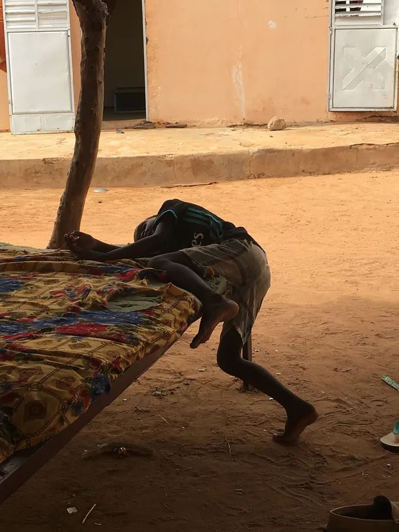

Les narrations visuelles d’Eva Diallo se développent autour d’une esthétique du fragment et de l’anecdote. L’artiste évolue à la marge du sujet capturant moments et détails qui concourent à une compréhension sensible des enjeux esthétiques. Face à la question de comment représenter une expérience aussi complexe que celle de la migration, Eva Diallo choisit d’évoluer à la frontière de l’art et du documentaire. Son travail sériel tisse des réseaux de sens qui se font écho d’une œuvre à l’autre et qui imposent de prendre le temps de lire ce que l’on voit. À la consommation hâtive des images souvent générées autour de ces sujets d’actualité, Eva Diallo préfère l’exercice poétique du déchiffrement comme une incitation à l’imagination, seule capable d’appréhender avec richesse et loin des clichés, les multiples facettes de nos vécus contemporains. Télécharger le CV de l'artiste (PDF, opens in a new tab.) Privacy Policy Manage cookies Copyright © 2026 Galerie Cécile Fakhoury Site by Artlogic Go Souscrivez à notre bulletin Instagram , opens in a new tab. Facebook , opens in a new tab. This website uses cookies This site uses cookies to help make it more useful to you. Please contact us to find out more about our Cookie Policy. Manage cookies Reject non essential Accept Cookie preferences Check the boxes for the cookie categories you allow our site to use Cookie options Strictly necessary Required for the website to function and cannot be disabled. Preferences and functionality Improve your experience on the website by storing choices you make about how it should function. Statistics Allow us to collect anonymous usage data in order to improve the experience on our website. Marketing Allow us to identify our visitors so that we can offer personalised, targeted marketing.
Expositions à la galerie